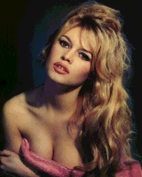
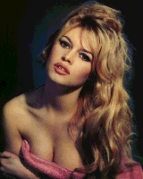

A Tribute
  Picture from Brigitte Bardot
 Picture from Brigitte Bardot
A Tribute
By David Watts
"I FEEL so guilty after all those teenage years perving on Brigitte Bardot, now she's an old woman of 60 . . .": Perth man, aged about 50.
" Bardot was a myth, an icon . . . even those two letters had their own vivacious lewdness --- BB, pronounced in French 'Bebe' ---- resembling in their double curves a providential mimetic tribute to the breasts and buttocks of their possessor, and yet paradoxically meaning 'baby'.": British author Sean French in a new book simply called Bardot.
Both quotes ultimately say the same thing about the French actress, jetsetter and animal rights activist, who this year is 60.
Bardot was the precursor to the swinging sixties. Gorgeous suntanned body, leonine blonde hair that looked best ruffled on the pillow and those beesting lips forever pouting.
She was sexually liberated 10 years before it became fashionable.
She spawned an army of lookalike actresses, among whom Catherine Deneuve, Jane Fonda and Julie Christie came to symbolise the new generation of the free, sexually adventurous and sunny and healthy good lookers.
Without Bardot they may not have stood a chance.
Sean French's excellent text and photographic tribute to Bardot explains what a force she became in France during the 1950s, and how that force, although diminished at times, still remains.
The France of the 50s was like the rest of post-war Europe --- grey, austere, conservative and deeply religious.
After a stint as a teen model, and roles in some ordinary movies, Bardot burst like a shocking ray of bright sunlight on the drab scene in 1957 in an outrageously sexy movie called And God Created Women.
She was 22 but played the part of a 17-year-old naive nymphette, who ruined men.
The personna leapt from the screen and devoured a generation of men and alienated their women.
According to French, this screen image of Bardot, allegedly created by her doting but manipulative first husband Roger Vadim, was no creation, but the real woman.
Bardot followed with more movies in which she played herself whatever the credits might say.
La Verite, Love is My Profession, and Le Mepris all displayed a sexually challenging, lust-provoking Bardot who seems unable to come to terms with the chaos she wreaks, especially among the seemingly respectable middle class.
Uncomfortable speaking English, Bardot ventured into a Hollywood movie only once, the awful western, Shalako, where she played opposite the great Scottish cowboy Sean Connery.
French says that had Bardot been lured to Hollywood, she may never have had the impact or left the temptress-style legacy she did.
In a way she was the European Marilyn Monroe, but she has survived, despite a suicide attempt in 1960 which was awfully like Monroe's tragically successful one two years later.
Bardot was a screen star, but French rightly asks who outside France could name more than two of her movies.
Her fame stepped off the screen into hundreds of magazines and her appetite spread scandal and infamy throughout the world.
This penchant for scandal included serial affairs with leading men, divorces, a child in 1960 who she left with her husband's family until the boy was a teenager, and a marriage to German jetset millionaire Gunther Sachs, which she openly acknowledged was a mistake. The couple lived in separate houses and Bardot said she did not even have the key to Sachs's house.
Catholic, conservative France was shocked by all this. When Bardot was recovering from her suicide attempt, a woman patient attacked her with scissors. Others spat at her or abused her in the street.
In the 1970s, Bardot's acting career started to wane . . . she always knew and accepted it would decline with her looks.
Her last movie in 1973 was the dreadful . . . in content and name . . . Colinot, the Skirt Puller-Upper.
Bardot was by then a fixture on the world's trendiest disco floors.
According to French, she prowled the floors for lovers, casually leaving whoever she was with to take home her new fancy ---- nearly always a "boy" years younger, good looking, athletic and disposable.
She broke their hearts as she lived her life like a man, in charge, making her own choices and decisions.
Some feminist writers, notably Simone de Beauvoir, have championed Bardot as one of the truly modern feminists, unafraid of her sexuality and her mastery of the situation.
French's book shows her to be vulnerable also.
A very middle class and urban attitude to animals got her started on the road to wildlife activism, where she chooses causes out of heartfelt sympathy for individual cases rather than from a wider, political agenda concerning the whole environment.
Her fourth marriage to right wing, racist politician Bernard d'Ormale is, according to French, another example of her naivity and irresponsibility.
Once told of her husband's politics and the alienation they were causing for her wildlife activities, Bardot tried to recant saying D'Ormale looked after politics and she was interested only in saving animals.
It was another little slide from grace at a time, 1992, when her love of animals and appearances on top rating French television shows, had appeared to restore her image in
Other sides to her character like a musical fame unknown outside France --- she had a good voice and predictably sang and wrote sexy lyrics --- emerge in French's book.
It is no portrait of a lady, but the more than 100 photographs of Bardot, from teen temptress to wrinkled activist, help tell why she is an icon of our age.Bardot by Sean French
Published by Pavilion
Distributed by Penguin Books, Australia
$34.95